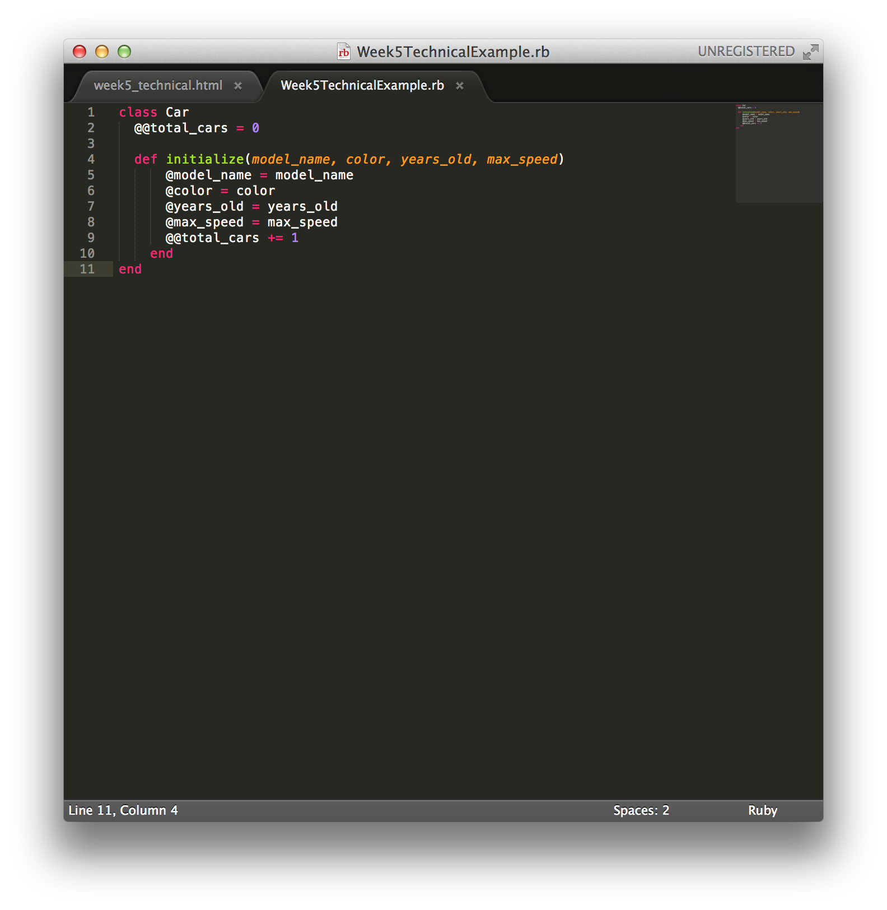
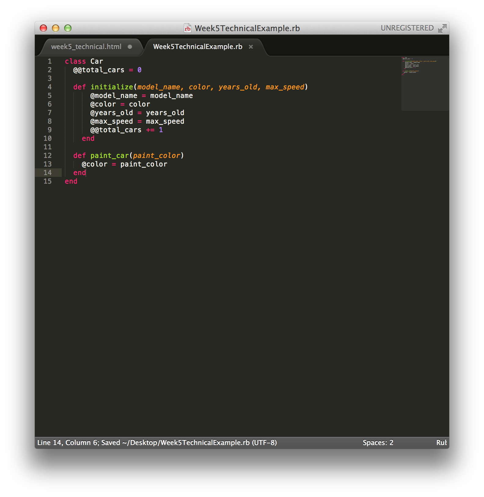
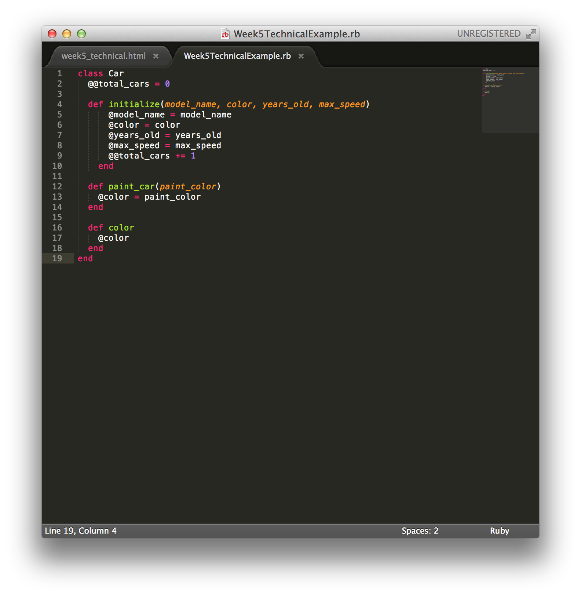
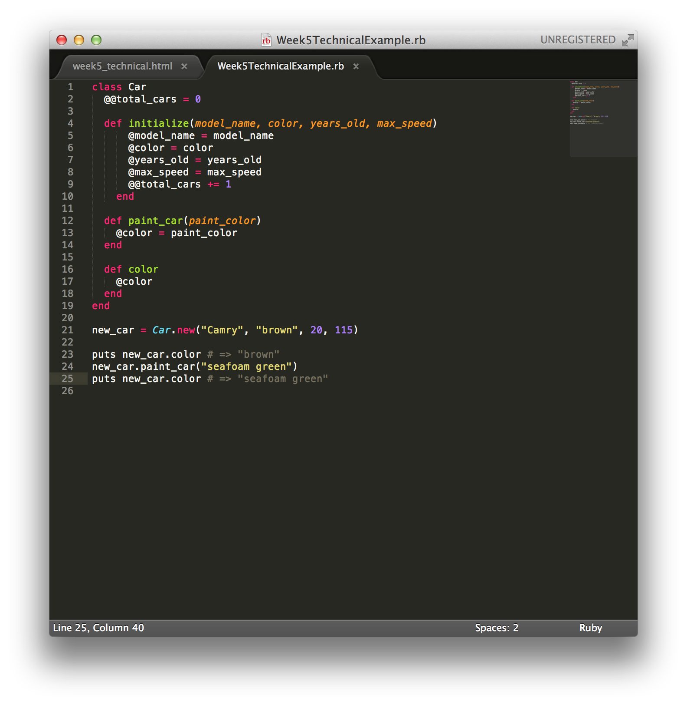

This week, we've learned a lot about creating and using Classes in Ruby. So what better way to cover what we've learned than to do an example? For this example, we're going to create a Class called Car that we'll use to make Car objects.
Creating the Car class and the initialize method
First, we'll need to define our new class using the syntax Class Car. Pretty simple, right? Next, we need to implement the initialize method that will be called when a new Car object is created. For our example, we'll have the initialize method take 4 parameters: model_name, color, years_old, and max_speed. For each one of these parameters, we will create an instance variable with the same name (but preceeded by the @ sign). Instance variables have a scope that extends across the entire class and are unique for each instance of the class that is created. In other words, each Car that we create will have it's own unique model_name, color, years_old, and max_speed attributes. Finally, within our initialize method, we'll also increment our class variable (preceeded by two @ signs) total_cars by 1. Unlike instance variables, class variables are shared by all instances of the class. In other words, the total_cars variable is shared by all cars, as opposed to each car having its own unique 'version' of total_cars.
 Creating the paint_car method
Next, we'll create a method called paint_car. The method will take a String with a paint_color as a parameter, and will set our @color instance variable equal to that value. Since our @color instance variable is available anywhere in our class, we can refer to it from our paint_car method without having to pass it in as a parameter. In contrast, our paint_color variable is a local variable, and it is only accessible within our paint_car method.
 Creating the color method
Finally, we'll create a color method. This will simply return the color of the car. We can return the color of the by returning our @color instance variable.
 Testing our class out
Let's create a car, check its color using the .color method, change its color using the .paint_car method, and then call the .color method again to make sure the color has changed.
That concludes this blog! Hope you learned some new information about Ruby Classes and variables.